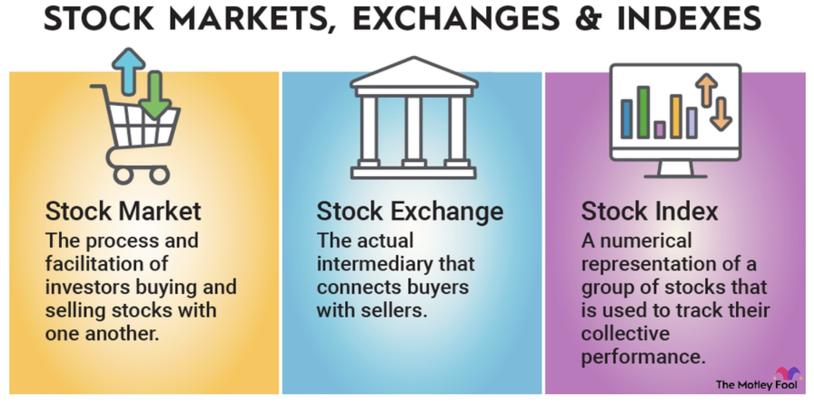

The stock market is one of the most powerful tools for wealth creation. It allows individuals and institutions to invest in publicly traded companies by buying and selling shares. When you purchase a stock, you become a part-owner of the company, and your investment’s value fluctuates based on market demand and company performance.
Investing in the stock market can be a great way to grow your money over time. There are two primary ways investors make money in the stock market:
Stock trading takes place on major stock exchanges such as the New York Stock Exchange (NYSE) and Nasdaq, where thousands of transactions occur every second. Market movements are influenced by various factors, including:
While investing offers the potential for high returns, it also involves risks. Smart investors use diversification (spreading investments across different industries and asset types) to reduce exposure to losses. Many successful investors follow a long-term strategy, investing in index funds that track the market’s overall growth, such as the S&P 500.
If you're new to investing, it's important to start with research, patience, and a clear investment strategy. By understanding key concepts and avoiding common pitfalls, you can make informed decisions and build a strong financial future.
